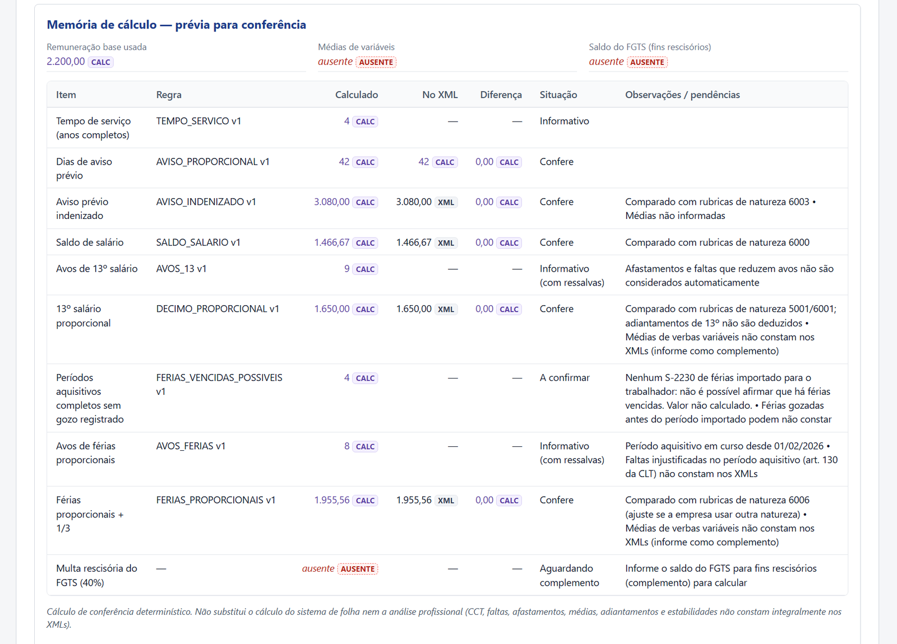
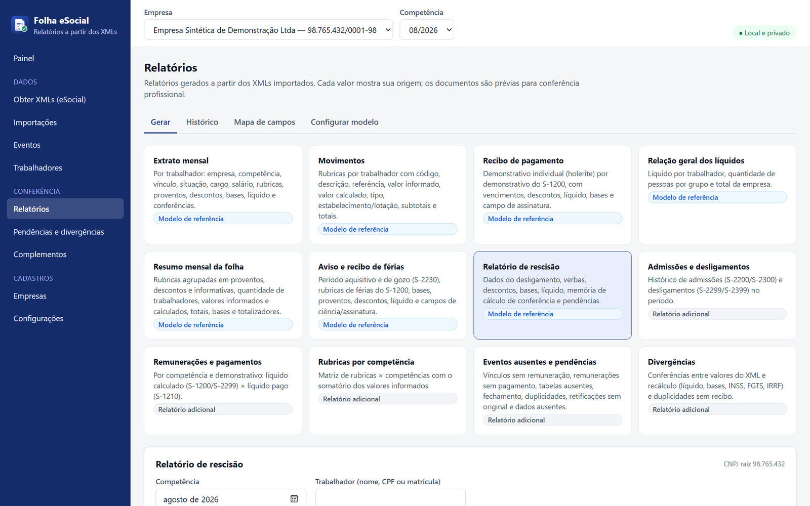
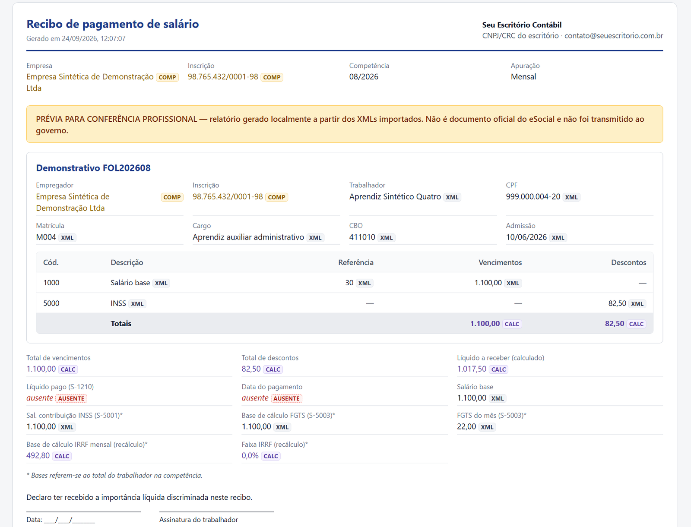
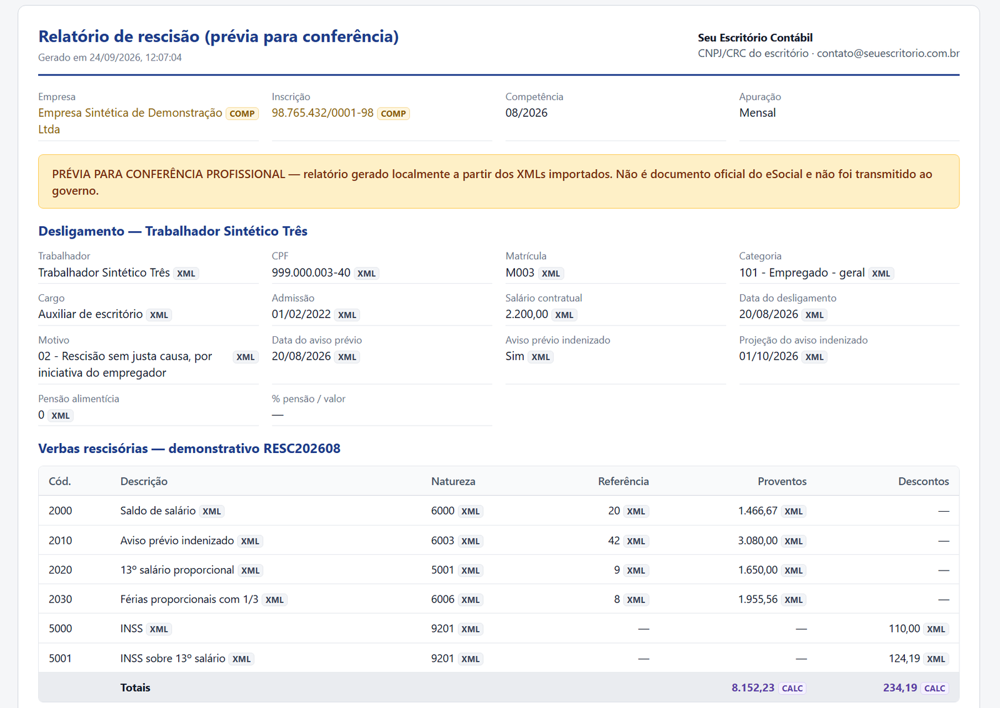
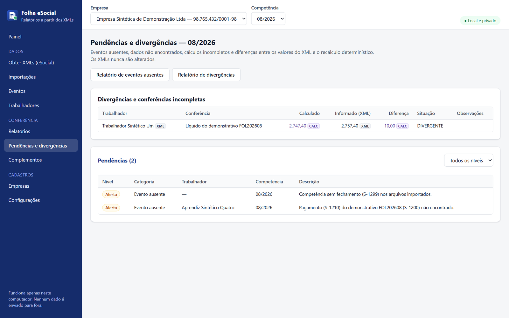
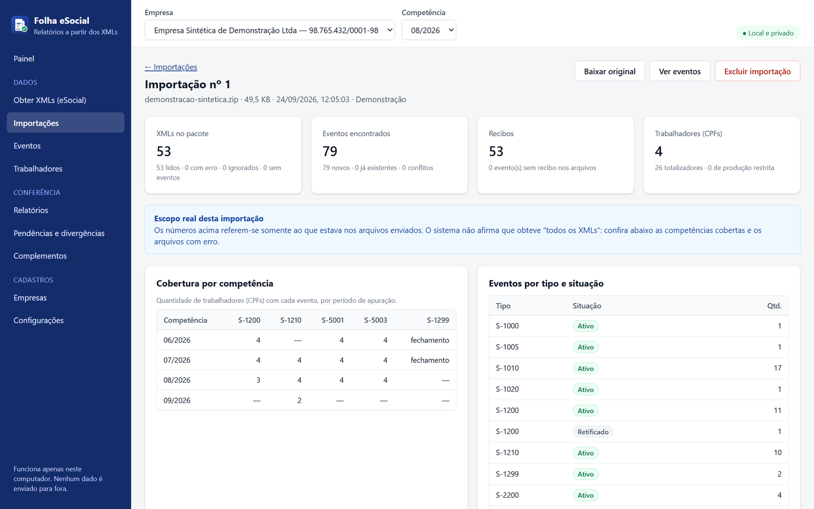
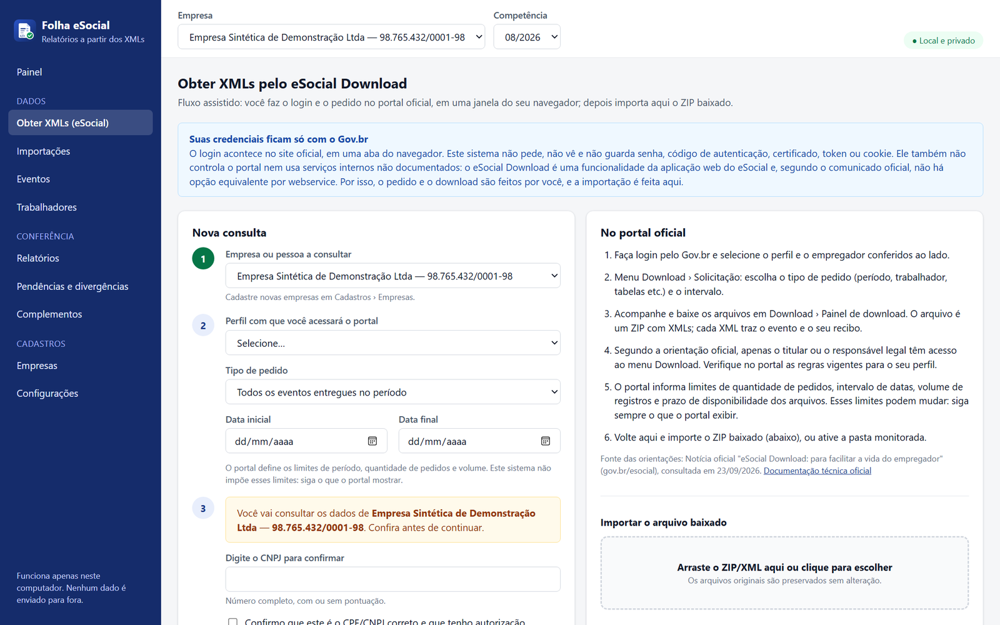

Relatórios de folha a partir dos XMLs do eSocial — com a origem de cada valor.
Importe o ZIP do eSocial Download, confira a folha contra um recálculo determinístico e exporte extrato, recibos, resumo, férias e rescisão em PDF, Excel e CSV. Sem nuvem, sem Docker e sem pedir senhas.
Cada número tem endereço
Clique em qualquer valor e veja de onde ele veio: o arquivo, o evento, o recibo e o campo exato do XML — ou a regra, a versão e a memória do cálculo.
- XMLVeio do eSocialArquivo, tipo de evento, Id, recibo e caminho do campo.
- CALCCalculado pelo sistemaFórmula, versão da regra, parâmetros e tabela legal com fonte.
- COMPComplementado por vocêInformações que o eSocial não recebe (médias, saldo do FGTS, data do aviso), com origem e data.
- AUSENTENão encontradoNunca vira zero. O sistema mostra o que falta e permite complementar.

Feito para quem confere folha todo mês
Da importação ao PDF assinado, com conferências que apontam divergências sem alterar os dados originais.
Importação segura
ZIP do eSocial Download, XMLs avulsos, lotes e ZIPs aninhados. Originais preservados, bloqueio de XXE, caminhos indevidos e “zip bomb”.
Retificações e exclusões
Reconhece indRetif, recibos e S-3000, evita dupla contagem e mantém todo o histórico consultável.
Conferência determinística
INSS, IRRF (com o redutor da Lei 15.270/2025), FGTS, avos, aviso proporcional e rescisão por motivo — regras versionadas, sem IA decidindo valores.
Pendências e divergências
Vínculo sem remuneração, S-1200 sem S-1210, competência sem S-1299, líquido pago diferente do calculado e muito mais.
PDF, Excel e CSV
Com sua marca no cabeçalho, marca d’água de prévia, histórico cifrado e uma aba “Origem dos dados” no XLSX.
Fluxo oficial, sem senhas
O login no eSocial é feito por você, no site oficial. O sistema confirma CPF/CNPJ e autorização e importa o ZIP baixado.
Do portal ao relatório em quatro passos
Obtenha
Peça os eventos no eSocial Download com seu login Gov.br. O sistema registra a solicitação e abre o portal oficial.
Importe
Arraste o ZIP. Eventos, recibos e totalizadores são lidos, validados e deduplicados.
Confira
Veja divergências entre o XML e o recálculo e complemente o que o eSocial não recebe.
Exporte
Gere PDF, XLSX ou CSV com a sua marca e guarde no histórico.
Interface pensada para o dia a dia do DP
Imagens geradas com a demonstração embutida — empresa e trabalhadores fictícios.






Doze relatórios, todos com origem rastreável
Dados trabalhistas ficam no seu computador
Nada é enviado para servidores externos. Nenhuma telemetria. Nenhuma senha solicitada.
- Banco cifrado (SQLite ChaCha20-Poly1305) e arquivos em AES-256-GCM.
- Chave protegida pela DPAPI: só o seu usuário do Windows abre os dados.
- Só 127.0.0.1, com proteção contra DNS rebinding e CSRF.
- Sem credenciais: Gov.br, certificado, token e cookie nunca passam pelo sistema.
- Logs sem dados pessoais: nada de CPF, nome, salário ou XML.
- Backup com senha e exclusão completa com um clique.
Pronto em poucos minutos
No Windows, basta baixar o projeto e dar dois cliques em iniciar.bat. Ele instala, compila e abre o sistema no navegador.
Pelo terminal
# 1. baixe o código git clone https://github.com/fredabsd-svg/folha-esocial-local.git cd folha-esocial-local # 2. instale e compile npm run setup # 3. inicie (abre http://127.0.0.1:5178) npm start
Primeira vez? No painel, clique em Carregar demonstração para explorar com dados fictícios.
Dúvidas comuns
O relatório é um documento oficial do eSocial?
Não. Todos os relatórios são prévias para conferência profissional, identificadas com marca d’água. Nada é transmitido ao governo.
O sistema acessa o eSocial com a minha senha?
Não. O login é feito por você no portal oficial, numa aba do seu navegador. O sistema só registra a solicitação e importa o ZIP que você baixar.
E se faltar informação no XML?
O campo aparece como ausente — nunca como zero. Você pode complementar com origem e data, e o cálculo que dependia dele passa a ser feito.
As tabelas de INSS e IRRF ficam desatualizadas?
As tabelas têm vigência, versão e fonte e podem ser atualizadas pela tela, sem mexer no código. Competências sem tabela geram cálculo “incompleto”, nunca um valor inventado.
Funciona com o CNPJ alfanumérico?
Sim. Cadastro, leitura dos XMLs e chaves internas aceitam o novo formato.